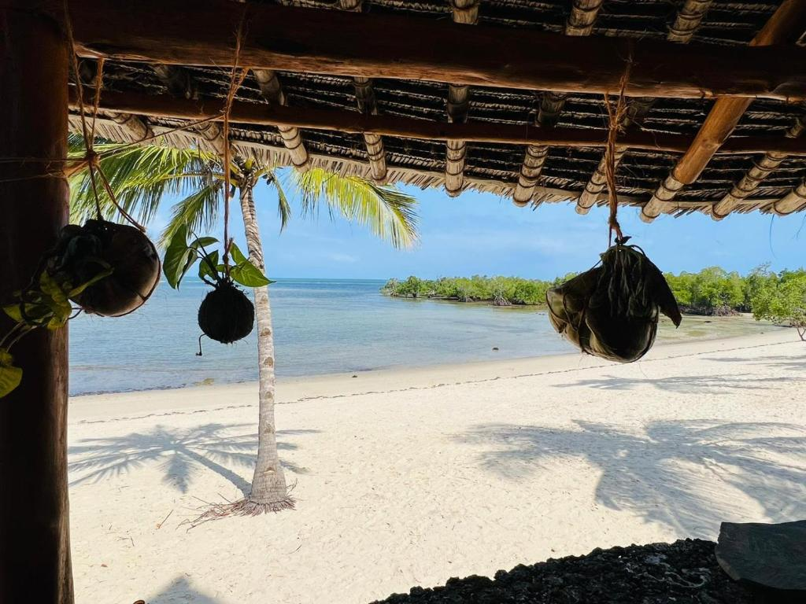

Discover the Charm of Shimanzi
Experience the beauty, culture, and history of Shimanzi. Your adventure awaits!
About Shimanzi
Shimanzi is a place rich in history, vibrant with culture, and surrounded by breathtaking landscapes. From bustling city streets to peaceful nature escapes, it offers something for every traveler.
Whether you're here for adventure, relaxation, or exploration, Shimanzi romises an unforgettable experience. Dive into the beauty of our local attractions, enjoy world-class hospitality, and immerse yourself in the traditions that make Shimanzi unique.
Highlights
- Historic Landmarks: Discover sites that tell the story of Shimanzi's past.
- Outdoor Adventures: Hike, bike, and explore scenic trails and natural wonders.
- Festivals and Events: Join in the local festivities for a true cultural experience.
- Gastronomy: Savor traditional and modern cuisine from our renowned chefs.